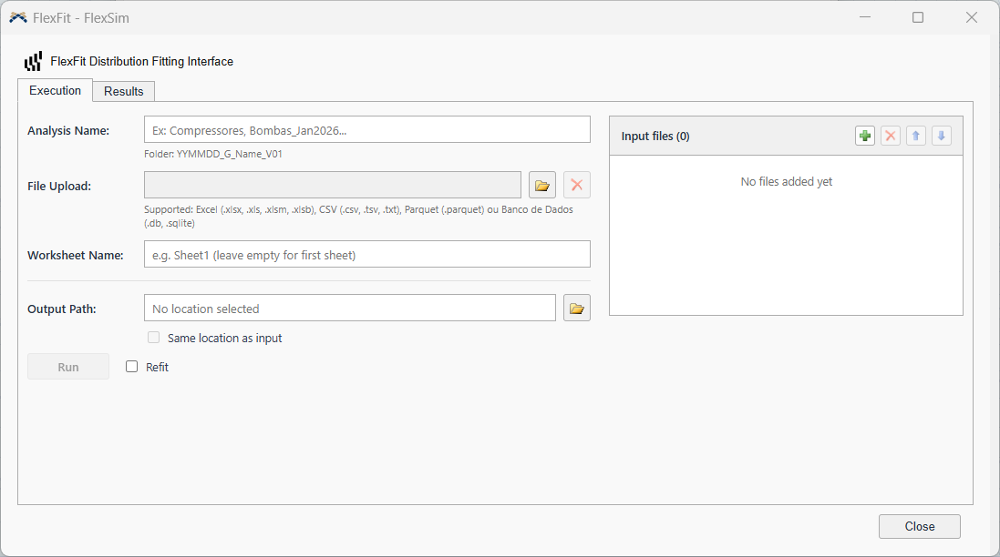
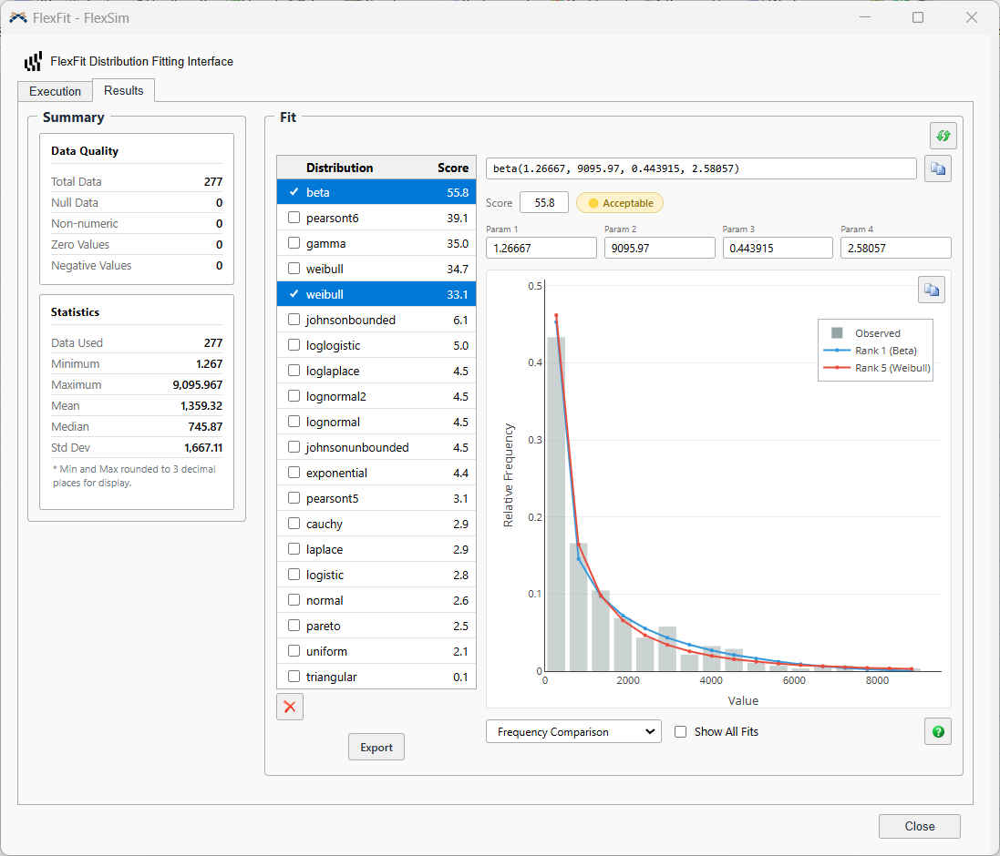
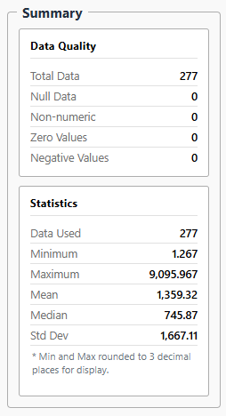
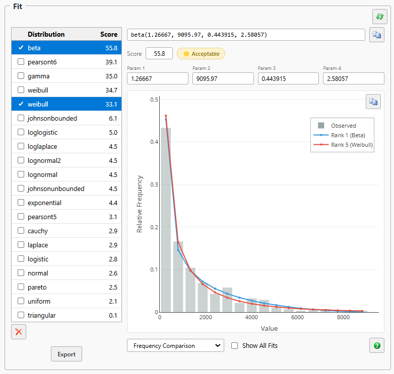
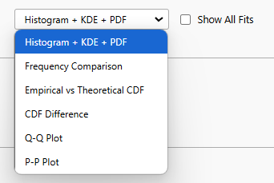
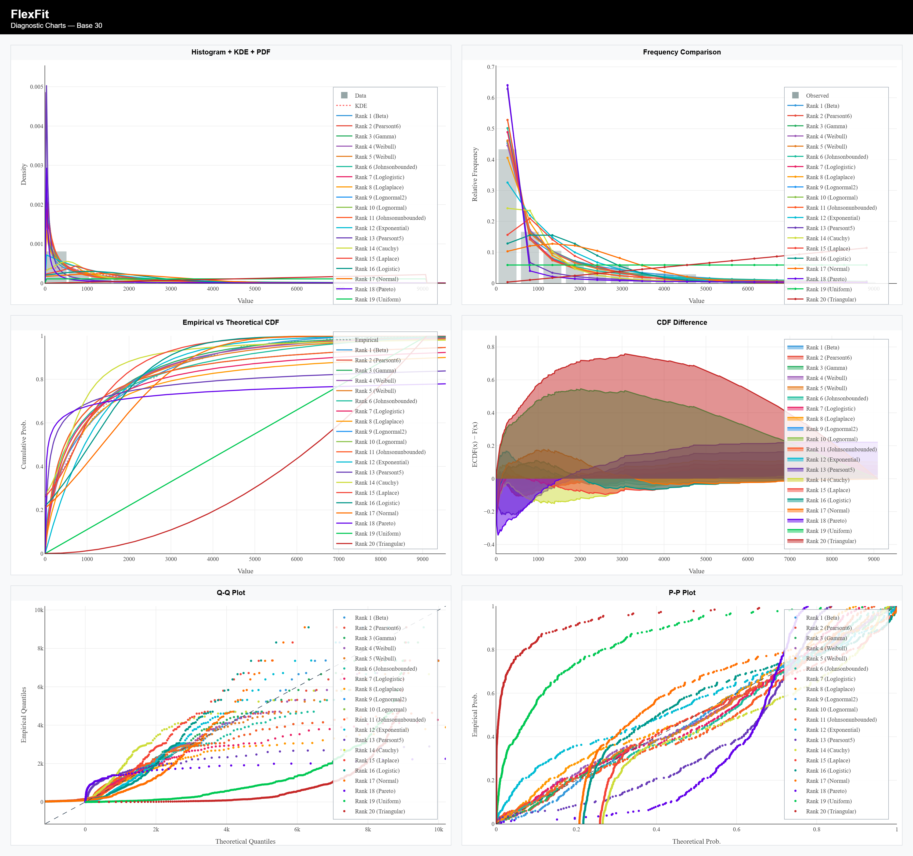

FlexFit takes one or more datasets (every column of every file becomes a "dataset"), cleans the values — removing nulls, negatives, zeros and non-numeric entries — and fits a set of statistical distributions to each dataset, in the style of FlexSim's ExpertFit module. The result is, for each dataset, a ranking of distributions by goodness of fit (Score), ready to be used in simulation models.
The workflow has two screens: Execution, where you point to the files and start processing, and Results, where you check data quality and explore the fitted distributions.
The fields appear in this order on screen, from top to bottom.

A free-form name for the analysis (e.g. Compressors, Pumps_Jan2026). It defines the name of the results folder, always in the format:
YYMMDD = today's date · G = general curves · V01 = first version of this analysis.
Add one or more files (folder button or drag and drop). Accepted formats: Excel (.xlsx, .xls, .xlsm, .xlsb), CSV (.csv, .tsv, .txt), Parquet and databases (.db, .sqlite). Every numeric column of every file becomes an independent dataset in the final ranking.
Name of the Excel worksheet to read, per file — click a file in the list on the right to edit its worksheet individually. Leave it empty to always use the first sheet of the file.
Manually pick the folder where the analysis will be saved, or turn on Same location as input to save each result automatically in the folder of its source file.
If the files come from different folders, each source folder becomes a separate analysis — Run processes one at a time.
Optional checkbox next to the Run button. See How Refit works — worth understanding before deciding whether to turn it on.
Starts the data cleaning and the distribution fitting. A progress bar follows the steps; when it finishes, the app switches on its own to the Results tab with a summary of the files and datasets processed.
After the Initial Fit — the first round of distribution fitting, applied to the original sample — each dataset already has a ranking of distributions by Score. With Refit on, FlexFit takes the top 3 distributions from that ranking and runs a second test: it generates a synthetic sample from the already-fitted parameters of each one, then refits the distribution on that synthetic sample.
This works as a second opinion — if the distribution really does describe the data well, it should keep fitting well to synthetic data generated from itself. When the refit finds a better fit, it replaces the original entry in the ranking; when it does not, the Initial Fit result is kept.
At the top, the Input file selector chooses which dataset you are looking at — if the analysis has more than one file or more than one valid column, each one appears here. Changing the dataset in this selector automatically updates the Fit panel beside it.


| Block | Field | What it shows |
|---|---|---|
| Data Quality | Total Data | Total number of rows read from the column, before any cleaning. |
| Null Data | Empty/null cells found. | |
| Non-numeric | Values that could not be converted to a number. | |
| Zero Values | Values equal to zero (removed from the fit). | |
| Negative Values | Negative values (removed from the fit). | |
| Statistics | Data Used | How many values remained after cleaning — this is the sample that feeds the fit. |
| Minimum / Maximum | Smallest and largest value of the cleaned sample.* | |
| Mean / Median | Mean and median of the cleaned sample. | |
| Std Dev | Standard deviation of the cleaned sample. |
* Min and Max are rounded to 3 decimal places for display only.
Lists every distribution tested for the current dataset, sorted by Score (0 to 100 — the higher, the better the fit). Tick a row's checkbox to see its details; tick more than one to overlay the curves on the chart beside it and compare them visually.

The focused distribution appears in a format ready to use in FlexSim, and the icon beside it copies the whole string (name + parameters):
The badge next to the Score summarises the quality of the fit:
| Badge | What it means |
|---|---|
| Good | Good fit — you can use it with confidence. |
| Acceptable | Acceptable, but worth checking the diagnostic charts before deciding. |
| Poor | Low score — the distribution did not fit the data well. |
Below the table, choose the chart type to visually assess the ticked distribution(s).

| Chart | What it shows | Good sign |
|---|---|---|
| Histogram + KDE + PDF | Bars (real data) + KDE (non-parametric smoothing) vs. the theoretical PDF of the fitted model. | The PDF line runs through the centre of the bars and follows the KDE. |
| Frequency Comparison | Observed relative frequency (bars) vs. the frequency expected by the model (line), per bin. | The expected line follows the top of the bars. |
| Empirical vs Theoretical CDF | Empirical CDF (Hazen method) vs. the theoretical CDF of the model, step by step. | The curves overlap across the whole domain. |
| CDF Difference | ECDF(x) − F(x): the CDF residual point by point; the shaded area shows the direction and size of the deviation. | The curve oscillates near zero, with no persistent trend. |
| Q-Q Plot | Theoretical quantiles (x axis) vs. empirical quantiles (y axis), with a 95% confidence band. | Points sit on the diagonal and inside the confidence band. |
| P-P Plot | Theoretical probability (x axis) vs. empirical probability (y axis), on the [0,1]×[0,1] square. | Points sit on the diagonal across the whole probability range. |
The Export button, below the distribution table, generates a single PNG image with the 6 charts side by side (2×3 grid), a header with the dataset name and a title on each panel — ready to paste into a report or send by e-mail, with no dependency on any file in the results folder.
